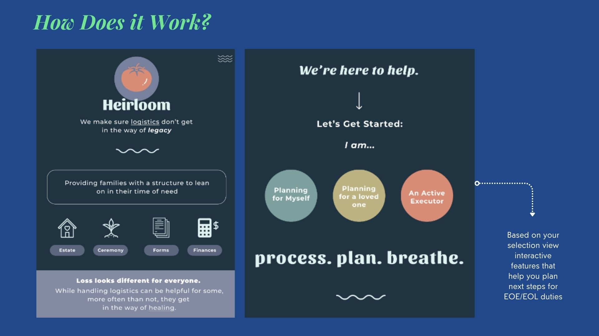
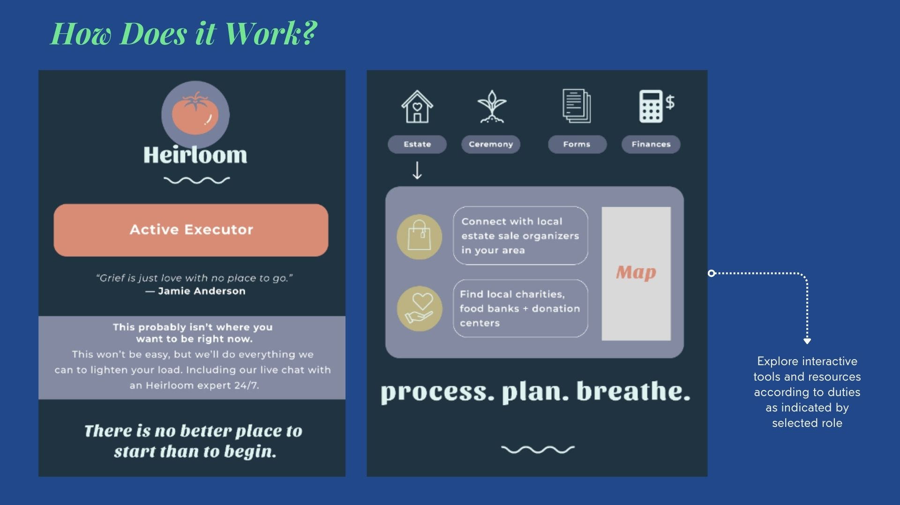
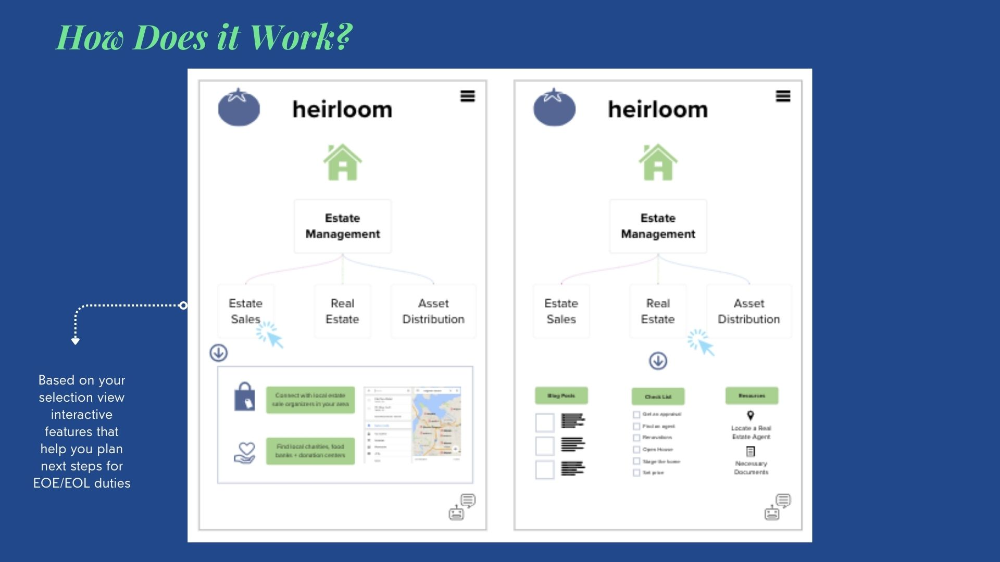
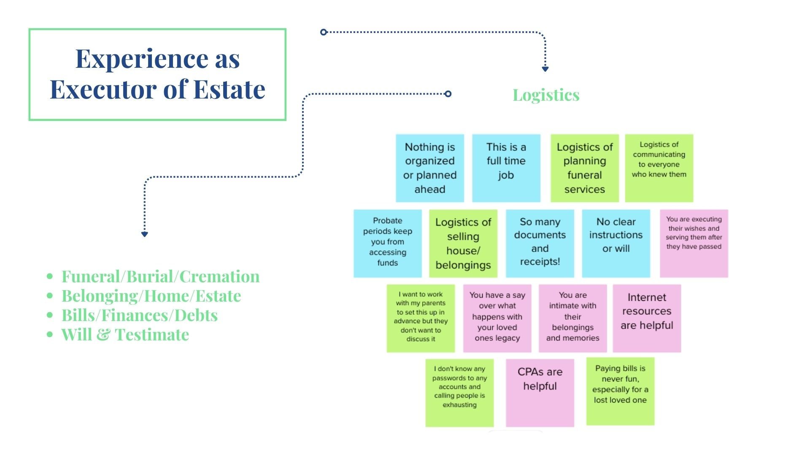
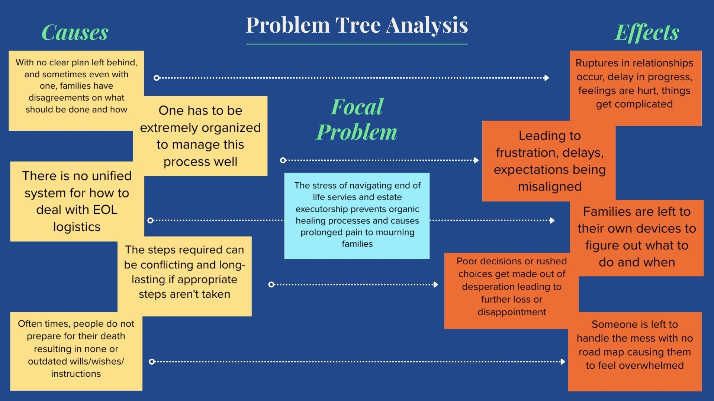
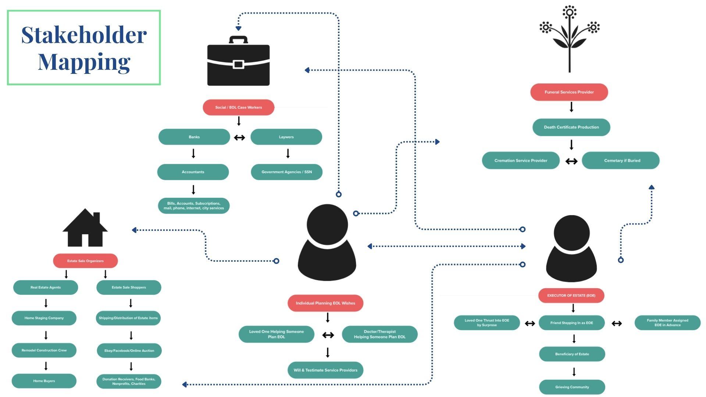
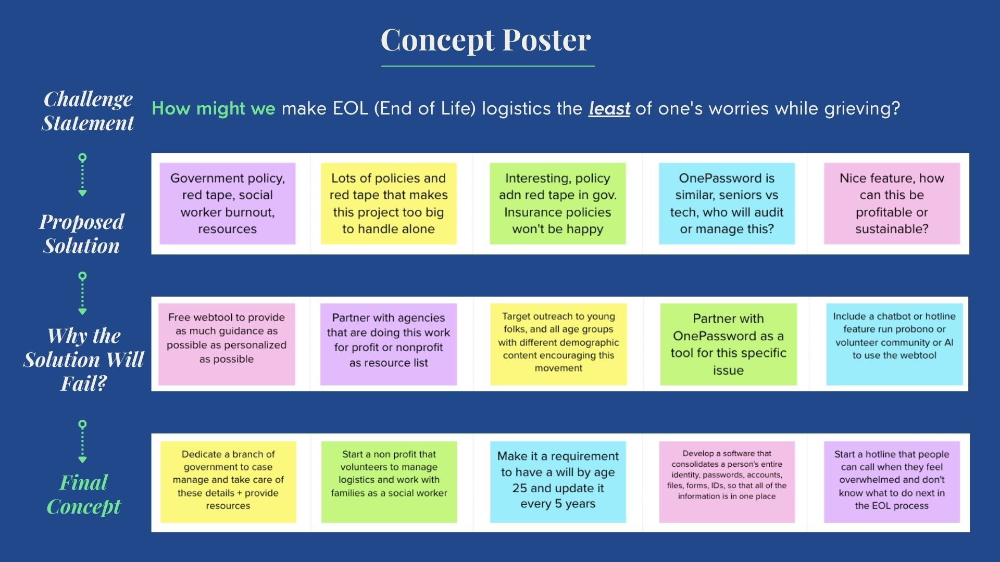
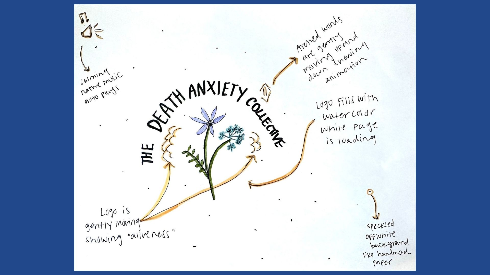

HEIRLOOMDesign Thinking Capstone Project for LUMA InstituteLUMA Institute is a renowned Design Thinking Consultancy. As a student of their Human-Centered Design Thinking Practitioner Certification program, I was asked to complete a final project of my choosing that utilized the design thinking tools learned throughout the course. |
|
|  |
I chose to explore how I could bring design to the topic of grief by identifying pain points for individuals and families grieving the loss of a loved one. I used design thinking to research, ideate, and prototype a creative solution called Heirloom. |
|  |
Heirloom is a tool designed to help alleviate the stress of being an Executor of Estate for a loved one. This project highlights my design thinking process and showcases how I took a broad subject matter and turned it into an actionable idea by utilizing LUMA Institute's design thinking exercises. |
|  |
KEY FEATURES
|
|  |
RESEARCHI used exercises such as Rose, Bud, Thorn, Affinity Clustering, Customer Journey, and Stakeholder Mapping to garner insights. My research showed me that grief looks different for everyone with key themes around family dynamics, finances, communication, and logistics. One's experience as an Executor of Estate varies widely and depends upon the systems they inherit. Heirloom can transform the grieving process by minimizing the logistics without sacrificing compassion. |
|  |
IDEATIONI used exercises like Problem Tree Analysis to identify the causes and effects of how logistics and overwhelm can interfere with the organic healing process. |
|  |
I used Stakeholder Mapping to understand key players and potential partnerships for the Heirloom platform. I learned that this experience spans across multiple disciplines from legal, real estate, funeral services, social workers, government officials, financial institutions, to personal relationships. |
|  |
TAKEAWAYSThe research itself at times felt overwhelming, to imagine grieving while navigating these often cold and emotionally insensitive systems made it clear to me that this tool would be pivotal in helping solve a real need. (See slideshow below for more details) |
|  |
INSIGHTSThis project also inspired me to use design to engage with my own fear of death, also known as Thanataphobia. I am now working on developing an online community and resource hub for those who live with heightened death anxiety. |

|
This website will host somatic tools for processing anxiety, resources for learning more about cultures of death around the world and throughout time, a forum to connect with peers, and an option to seek help for further care. The design will be living and breathing with nature elements that create a safe corner of the internet to sit with big emotions and find ways to be present. |